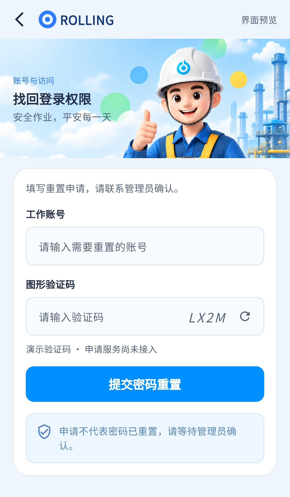

UI结构大部分具备，申请业务仍未接入；最新代码已明确说明未发送申请、密码未变更，旧版“申请已记录”的误导已修正，不再列为当前缺陷。
相同 · 已有基础
最新页面已具备返回、品牌、插画、工作账号、图形验证码、刷新、提交按钮和管理员确认提示。
不同 · UI与场景
收尾复核发现02已由旧底部弹层改为独立页面；旧新密码/确认密码字段已移除。结构更接近设计，头图高度、标题字号和表单比例仍按现有公共组件，新增“界面预览”和未接入标识。
01 / 先看 UI
两图显示宽度统一；设计390px与当前360逻辑宽的画布不同。各图可独立滚动到底，点击“原图”放大。


本报告补采最新登录/找回组件，02已改为独立页，申请服务未接入。
02 / 逐项核对功能与小交互
入口：登录 → 忘记密码 / 申请重置 · 当前形态：独立页面（最新更新）
| 编号 | 部位 | 设计要求 | 当前UI | 功能结论 | 下一步 |
|---|---|---|---|---|---|
| 02-01 | 容器 | 完整找回登录权限内容，含返回和品牌 | 最新为Navigator独立Scaffold，已非底部弹层 | 已有代码：从登录进入、返回、SafeArea和滚动 | 保持独立页，校验顶部和键盘态 |
| 02-02 | 头图 | 插画、账号与访问、找回标题、宣传语 | 插画和文字已有；标题16，公共头图148，比例与设计不同 | 已有展示：右上另标界面预览 | 与公共UI一起调整字号、裁切和留白 |
| 02-03 | 账号 | 工作账号必填 | 已有标签、输入框和登录账号预填 | 已有代码：trim非空校验、键盘下一项 | 保留预填，验收空白输入 |
| 02-04 | 验证码 | 图形码、输入和刷新 | 最新已有验证码和刷新图标，不再缺失 | 部分：Random.secure生成4位本地码，不区分输入大小写；刷新清空输入 | 本地演示已明确，真实申请需要服务端验证码 |
| 02-05 | 密码字段 | 图中无新密码和确认密码 | 最新已移除旧两个密码框 | 与设计一致：不收集无去向的新密码 | 不再把旧版字段差异列待办 |
| 02-06 | 提交 | 提交申请，等待管理员确认 | 蓝色44高按钮、圆角10，文案提交密码重置 | 部分：验证后仅对话框，明确申请尚未发送、密码未变更，无网络请求 | 接申请接口与真实回执；修正文案已完成 |
| 02-07 | 说明 | 申请不代表已重置、联系管理员 | 浅蓝提醒卡已有，另标演示验证码/服务尚未接入 | 已有代码：边界说明明确 | 保留未接入标识，接真实接口后按结果更新 |
| 02-08 | 返回和键盘 | 可退回登录、内容完整 | 返回按钮、滚动布局、拖动收键盘 | 已有代码：释放账号/码控制器，键盘完成键提交同一校验 | 验收小屏、大字体、键盘打开、取消结果对话框 |
源码依据
auth_pages.dart:138,476；password_reset_page.dart:6,26,38,71,106,155,192,226
链接为随报告保存的带行号快照；行号对应分析时源码。以函数和字段共同定位，不能将请求代码视为执行成功证据。